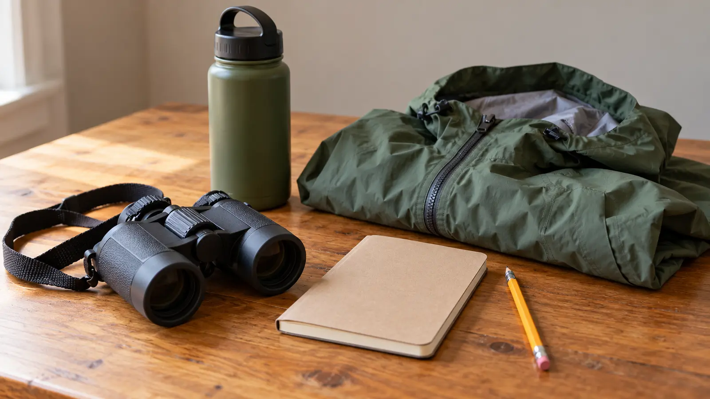

0–15 minutes: settle
Park, use the restroom and ask staff about current trail conditions. Pick one observation window or feeder-viewing spot. Keep the group together.
ITHACA · QUIET NATURE DAY · AGES 6–12 · DATA-LED
Start with one window and one bird. The trail is a second decision, not a mileage debt. A good first birding visit ends with three observations, not a perfect species list.

This is a useful fit for school-age children who can pause, look and take turns. It is not a zoo: there are no captive birds performing on demand. Make the promise “we will practice noticing,” not “we will see an owl.” Budget roughly 75–95 minutes each way from central Syracuse as an editorial planning allowance; check your actual starting point, road weather and navigation on departure morning. Travel time is not included in the 90-minute visit below.
For a first visit, arrive while the center is open. That gives the day an indoor anchor if the trail is muddy or somebody runs out of steam. Do not attach another major attraction to prove that the drive was worthwhile. The Museum of the Earth plan is a separate Ithaca alternative, not an automatic second ticket. Cornell’s visit page owns current programs; this evergreen route does not promise a guided walk or duplicate this weekend’s events.
Cornell identifies the Wilson Trail as a 0.75-mile pond loop. The wider network uses mostly level mulched paths and boardwalks; roots and changing surfaces still matter. Use the official trail map, follow current signs and ask about closures. Do not improvise a shortcut or assume a wet boardwalk is a stroller-friendly pavement route. The outdoor visitor page describes the network and links its map.
Let one adult lead and one adult sweep when two adults are present. With one adult, keep the group inside the distance at which instructions can be heard without shouting. Stay on designated paths and away from the pond edge. Stop rather than stretch the route when wind, thunder, ice, poor footing or fading daylight changes the plan. Use the weather cutoff framework before leaving the building.
The Visitor Center offers step-free ground-floor access, an elevator, seating, accessible restrooms and a family restroom. The partially paved parking approach is about 400 feet from accessible spaces to the entrance. Borrowed wheelchairs are first-come, not a reservation. Trails have roots and boardwalk sections; Cornell does not recommend them for wheelchairs. Confirm the actual route for your mobility device rather than translating “mostly flat” into “accessible.”
Staff can advise about sensory supports. The Bird Discovery Lab includes preserved bird specimens and bones, which some children may find upsetting. Tell them before entering. Pets and emotional-support animals are not permitted in the building or trails; qualifying service animals are welcome. Use Cornell’s accessibility page and accommodation contact for individual needs. If the required support is not confirmed, choose the indoor-only version or postpone.
There is no on-site food service. Bring a simple picnic or pick a meal stop before departure; tables are near the entrance and trash goes home with you. An accessible portable toilet is in the visitor lot; indoor facilities depend on building hours. Use the bathroom-stop plan if the drive or facility type matters for your family.
If binocular sharing causes more waiting than looking, put them away. Try the acquisition drill in the family binocular guide at home first. Never look toward the sun through binoculars. Cornell’s free guides and youth activities are a better first stop than shopping.
Wet or uncertain footing: use the indoor viewing and one exhibit, then leave. Few visible birds: record habitat, motion or a question; do not lure or chase wildlife to force a result. Restless children: switch from silent watching to a short supervised walk only if conditions permit. Low energy: make it a 30-minute window-and-sketch visit. Monday: an outdoor visit loses the indoor fallback; choose another open-day plan if you need that support.
Skip when the family needs a loud free-running playground, must bring a pet, cannot tolerate the drive, or needs an outdoor accessible surface that has not been confirmed. The nearby Cornell Botanic Gardens guide describes a different outing, not a guarantee of identical rules or access.
Reviewed October 18, 2026 by Mr Adventure Dad Editorial Desk using Cornell’s linked visitor, accessibility, outdoor and activity resources. The schedule and observation card are our planning framework, not a first-person trip report or Cornell endorsement. No bird sighting, current trail condition or travel time is guaranteed. Recheck official information before travel; the editorial method and public correction route explain how to report a sourced factual issue without posting private information.
MAKE THE WEEK COUNT
Build the plan your family can finish well, then leave enough energy for the next part of the day.
More family plans